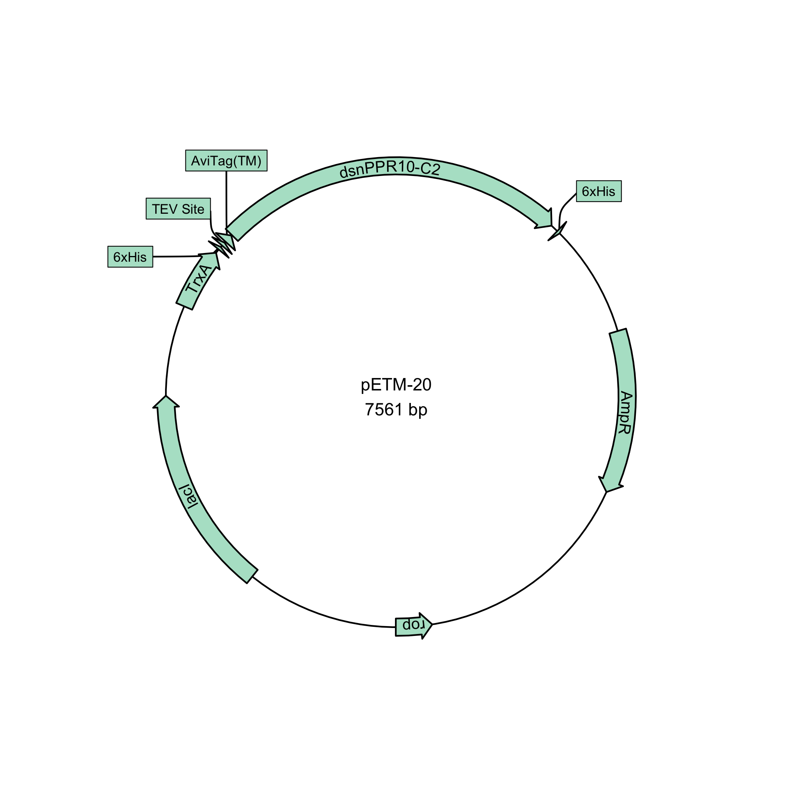

This is an R package for making plasmid maps using ggplot2.
Installation
This package is still very early in development and the API may change. The parser for
.gbfiles works most of the time but has not been tested extensively.
# install.packages("devtools")
devtools::install_github("bradyajohnston/plasmapr")Example
plasmapR provides functions for parsing and plotting .gb plasmid files.
Once a plasmid has been exported in Genbank format it can be parsed and plotted.
library(plasmapR)
fl <- system.file('extdata', 'petm20.gb', package = "plasmapR")
fl |>
read_gb() |>
plot_plasmid(name = "pETM-20")Access the features by turning the plasmid into a data.frame.
fl <- system.file('extdata', 'petm20.gb', package = "plasmapR")
plasmid <- fl |>
read_gb()
dat <- plasmid |>
as.data.frame()
head(dat)## index name type start end direction
## 1 1 synthetic DNA construct source 1 7700 1
## 2 2 f1 orim rep_origin 12 467 1
## 3 3 AmpR promoter promoter 494 598 1
## 4 4 AmpR CDS 599 1459 1
## 5 5 ori rep_origin 1630 2218 1
## 6 6 bom misc_feature 2404 2546 1
dat[dat$type == "CDS", ] |>
plot_plasmid(name = "pETM-20")
It’s not currently intended for linear display, but it can be used as such. I recommend checking out the gggenese package.
dat[dat$type == "CDS", ] |>
plot_plasmid(name = NULL) +
ggplot2::coord_cartesian() +
ggplot2::scale_y_continuous(limits = NULL)A {ggplot2} Object
The result of the call is just a {ggplot2} plot, which you can further customise to your liking with themes, etc.
fl <- system.file('extdata', '20.gb', package = "plasmapR")
plt <- fl |>
read_gb() |>
plot_plasmid()
plt + ggplot2::theme_bw()